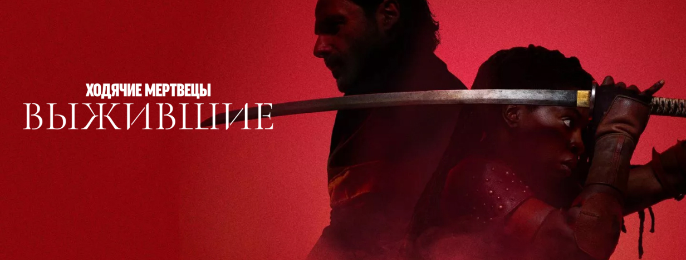
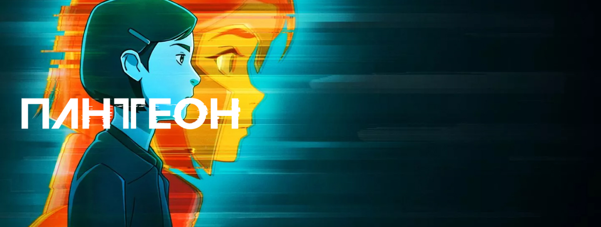
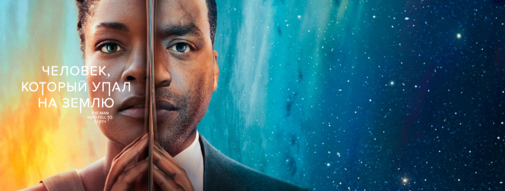
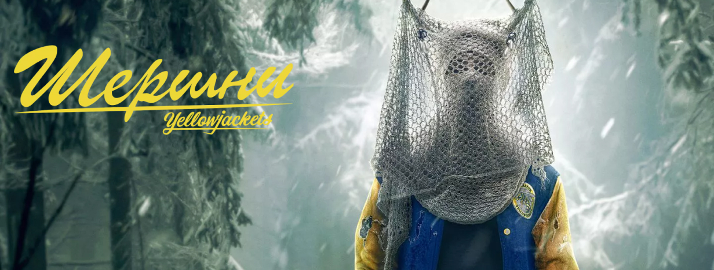

Жизнь задом наперед(18+)
/Фильм
О фильме
Описание
Экранизация биографии Стюарта Шортера, бездомного алкоголика и наркомана, который выступал против действий полиции в отношении людей, живущих на улице. Был ведущей фигурой в кампании по освобождению Руфи Вайнер и Джона Брока, создателей центра помощи бездомным.
Трейлер
- 
Финал сезона уже доступен к просмотру. Узнайте, чем закончилась история воительницы Мишонн (Данай Гурира) и ее мужа Рика Граймса (Эндрю Линкольн)
- 
Смотрите все серии фантастического анимационного сериала с элементами киберпанка, основанного на рассказах китайско-американского писателя Кена Лю
- 
Фантастический сериал с Чиветелем Эджиофором («12 лет рабства», «Доктор Стрэндж») и Наоми Харрис («28 дней спустя», серия фильмов о Джеймсе Бонде)

Что будет, если объединить комедию и ужасы? Сериал «Стэн против сил зла»!

Криминальная драма о водителе такси, который вынужден курсировать не только между разными точками на карте, но и между добрыми и злыми поступками.
- 
Драматический триллер о группе школьниц, которые выжили в лесу после авиакатастрофы, продолжается во втором сезоне